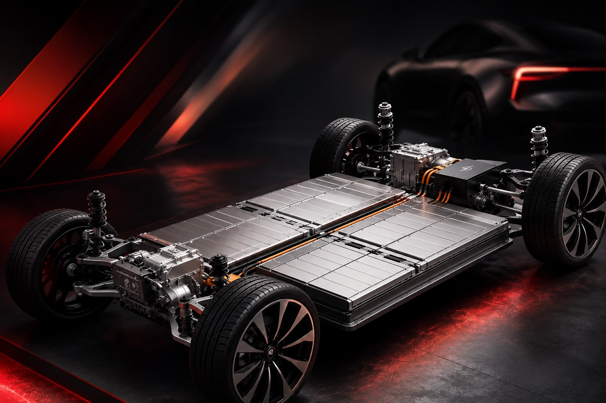

Bateria semissólida: o atalho que pode chegar aos carros elétricos antes do estado sólido

A bateria semissólida vem sendo apontada como uma alternativa intermediária no caminho até a bateria de estado sólido — tecnologia considerada o "santo graal" dos carros elétricos, mas que só deve chegar ao mercado entre 2027 e 2030. Enquanto isso, a semissólida já é realidade em alguns modelos vendidos no Brasil.
É o caso do MG4 Urban Luxury, que já roda por aqui equipado com esse tipo de bateria. Na prática, ela reduz a quantidade de eletrólito líquido usada nas baterias atuais (de íon-lítio convencionais), aproximando-se dos ganhos de segurança e durabilidade prometidos pelo estado sólido, sem o mesmo custo de produção — o que ajuda a explicar por que ela pode chegar aos carros elétricos antes.
Pra quem acompanha o mercado de elétricos pela Fox, vale ficar de olho: tecnologias de bateria como essa tendem a impactar direto autonomia, tempo de recarga e preço final dos próximos lançamentos que devem passar pela loja.